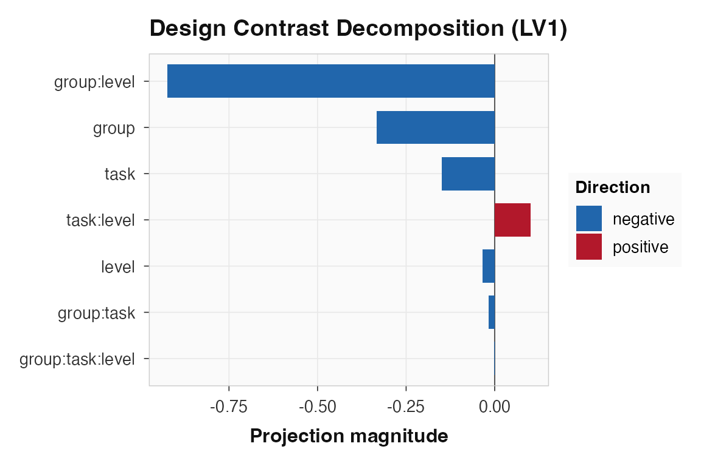

Design-Subspace Summaries for Task PLS
Source:vignettes/task-design-subspace.Rmd
task-design-subspace.RmdTask PLS gives you latent variables over a flattened set of group-by-condition cells. When the conditions come from a factorial design, the next question is often more specific: does the covariance pattern live mostly in a task effect, a group-by-task interaction, or a higher-order term?
The design-subspace helpers answer that question on the design side of Task PLS. They do not run voxelwise ANOVAs. They build factorial subspaces over the same centered cell rows used by Task PLS and summarize how much cross-block covariance lies in each subspace.
What are the data?
This example uses synthetic data with two groups, two tasks, and two levels. The planted signal includes a group-by-task effect, a level effect, and a smaller three-way interaction.
The condition key maps each PLS condition label back to the factors that created it.
condition_key
#> condition task level
#> 1 recog_low recog low
#> 2 recog_high recog high
#> 3 nback_low nback low
#> 4 nback_high nback highHow do we keep the Task PLS cross-block matrix?
Design-subspace summaries need the cell-level cross-block matrix used
by Task PLS before the singular value decomposition. Request it at fit
time with keep_crossblock = TRUE.
spec <- pls_spec() |>
add_subjects(list(control, sdam), groups = c(n_subjects, n_subjects)) |>
add_conditions(nrow(condition_key), labels = condition_key$condition) |>
add_group_labels(c("control", "sdam")) |>
configure(method = "task", meancentering = "grand_mean")
fit <- run(spec, progress = FALSE, keep_crossblock = TRUE)The ordinary Task PLS result is still a latent-variable model. The new field is only a compact summary object needed for design-subspace calculations; it does not store the original subject-level imaging data.
How do we define the factorial design?
Use pls_design() to describe the design over
group-condition cells. The rows come from the PLS result; the
condition-level factors come from the condition key.
design <- pls_design(
~ group * task * level,
condition_key = condition_key,
between = "group",
within = c("task", "level")
)You can inspect the cell table to confirm the row order. These are the rows of the Task PLS cross-block matrix: all conditions for group 1, then all conditions for group 2.
design_cell_table(fit, design = design)[
, c("row_index", "group", "condition", "task", "level")
]
#> row_index group condition task level
#> 1 1 control recog_low recog low
#> 2 2 control recog_high recog high
#> 3 3 control nback_low nback low
#> 4 4 control nback_high nback high
#> 1.1 5 sdam recog_low recog low
#> 2.1 6 sdam recog_high recog high
#> 3.1 7 sdam nback_low nback low
#> 4.1 8 sdam nback_high nback highWhich factorial terms does an LV resemble?
Start descriptively. decompose_design_terms() projects
one design-side LV onto the centered factorial subspaces and reports how
much LV energy aligns with each term. This helps interpret an already
selected LV; it is not a p-value.
lv_terms <- decompose_design_terms(fit, lv = 1, design = design)
lv_terms$fraction <- round(lv_terms$fraction, 3)
lv_terms[order(lv_terms$fraction, decreasing = TRUE),
c("term", "rank", "fraction")]
#> term rank fraction
#> 5 group:level 1 0.855
#> 1 group 1 0.110
#> 2 task 1 0.022
#> 6 task:level 1 0.010
#> 3 level 1 0.001
#> 4 group:task 1 0.000
#> 7 group:task:level 1 0.000For this simulated example, LV1 should align strongly with the planted factorial effects. The exact ordering is data-dependent because the example still includes noise.
A plot of the same LV-level decomposition is useful when you want a quick interpretive summary for a selected latent variable.
plot_design_contrasts(fit, lv = 1, condition_key = condition_key)
Effect-coded decomposition of the LV1 design scores.
How do we fit term-specific PLS components?
The ASCA-like step is design_subspace_svd(). It projects
the stored Task PLS cross-block matrix into each centered factorial
subspace, then fits a separate SVD for each term. This is a fitted
term-specific PLS decomposition, not a post-hoc label attached to a
global LV.
term_fit <- design_subspace_svd(
fit,
design = design,
ncomp = 2,
statistic = "trace"
)
term_fit$statistics[, c("term", "rank", "trace", "largest_root")]
#> term rank trace largest_root
#> 1 group 1 2.884746 2.884746
#> 2 task 1 2.780662 2.780662
#> 3 level 1 2.727144 2.727144
#> 4 group:task 1 2.227952 2.227952
#> 5 group:level 1 4.749049 4.749049
#> 6 task:level 1 2.735260 2.735260
#> 7 group:task:level 1 3.228667 3.228667
components <- term_fit$components
components$percent_term_covariance <- round(components$percent_term_covariance, 3)
components[components$component == 1,
c("term", "component", "singular_value", "percent_term_covariance")]
#> term component singular_value percent_term_covariance
#> 1 group 1 1.698454 1
#> 2 task 1 1.667532 1
#> 3 level 1 1.651407 1
#> 4 group:task 1 1.492632 1
#> 5 group:level 1 2.179231 1
#> 6 task:level 1 1.653862 1
#> 7 group:task:level 1 1.796849 1The term-level trace is the total squared singular-value
energy in that subspace. largest_root is the dominant
PLS-like component for the same projected matrix.
Can we get resampling p-values?
Yes, for a clearly named null. test_design_subspaces()
wraps the term-specific SVD object and recomputes each subspace
statistic over permuted Task PLS cross-block matrices. With
permutation = "global_task_pls", the question is:
Is term-aligned covariance larger than expected under the package’s ordinary global Task PLS no-design null?
This is useful global-null inference. It is not a reduced-model-preserving nested test.
set.seed(20260510)
term_tests <- test_design_subspaces(
spec,
fit = fit,
design = design,
statistic = "trace",
nperm = 99,
permutation = "global_task_pls",
correction = "maxT"
)
term_tests$share <- round(term_tests$statistic / sum(term_tests$statistic), 3)
term_tests$statistic <- round(term_tests$statistic, 2)
term_tests[, c("term", "rank", "statistic", "share", "p_value", "p_adjusted")]
#> term rank statistic share p_value p_adjusted
#> 1 group 1 2.88 0.135 0.5454545 1.0000000
#> 2 task 1 2.78 0.130 0.7979798 1.0000000
#> 3 level 1 2.73 0.128 0.8080808 1.0000000
#> 4 group:task 1 2.23 0.104 0.9797980 1.0000000
#> 5 group:level 1 4.75 0.223 0.1616162 0.7272727
#> 6 task:level 1 2.74 0.128 0.8080808 1.0000000
#> 7 group:task:level 1 3.23 0.151 0.5858586 0.9898990The compatibility wrapper test_design_terms() returns
the same observed statistics, and can use the same global-null p-values
when you pass the original spec. New code should prefer
test_design_subspaces() because the name makes the fitted
object explicit.
If you want the most PLS-like single-root statistic instead of
omnibus energy, use statistic = "largest_root".
largest_root <- test_design_terms(
fit,
design = design,
statistic = "largest_root"
)
largest_root$statistic <- round(largest_root$statistic, 2)
largest_root[, c("term", "rank", "statistic")]
#> term rank statistic
#> 1 group 1 2.88
#> 2 task 1 2.78
#> 3 level 1 2.73
#> 4 group:task 1 2.23
#> 5 group:level 1 4.75
#> 6 task:level 1 2.74
#> 7 group:task:level 1 3.23How do we ask a nested design question?
Use compare_design_subspaces() when your question is
“what is added by the full model beyond the reduced model?” The function
residualizes the full design against the reduced design in the same
centered Task PLS row space, then fits the delta-subspace SVD.
task_beyond_group <- compare_design_subspaces(
spec,
fit = fit,
design = design,
reduced = ~ group,
full = ~ group * task,
nperm = 99,
permutation = "global_task_pls"
)
interactions_beyond_main_effects <- compare_design_subspaces(
spec,
fit = fit,
design = design,
reduced = ~ group + task + level,
full = ~ group * task * level,
nperm = 99,
permutation = "global_task_pls"
)
nested_tests <- rbind(task_beyond_group, interactions_beyond_main_effects)
nested_tests$statistic <- round(nested_tests$statistic, 2)
nested_tests[, c("reduced", "full", "added_terms", "rank", "statistic", "p_value")]
#> reduced full
#> 1 ~group ~group * task
#> 2 ~group + task + level ~group * task * level
#> added_terms rank statistic
#> 1 task + group:task 3 7.89
#> 2 group:task + group:level + task:level + group:task:level 7 21.30
#> p_value
#> 1 0.9696970
#> 2 0.9494949The first comparison asks how much covariance is carried by task plus the group-by-task interaction after accounting for group. The second asks how much covariance is carried by all interactions after accounting for the three main effects. The p-values shown here are still global Task PLS null p-values for the delta statistic. A stricter reduced-model null would need to preserve the reduced design structure during resampling.
How should the summaries be interpreted?
Keep three distinctions clear:
-
plot_scores()andplot_design_contrasts()help you interpret selected LVs. -
decompose_design_terms()descriptively attributes one LV’s design vector to factorial terms. -
design_subspace_svd()fits term-specific PLS components from projected cross-block matrices. -
test_design_subspaces()andcompare_design_subspaces()add observed statistics and, when apls_specis available, global Task PLS permutation p-values.
These are design-subspace summaries, not classical ANOVA tables and not voxelwise tests. They preserve the multivariate PLS object while making the factorial structure of the design explicit.
Where to go next
Use vignette("sdam-firstlevel-task-pls") for a
first-level image-map example with design-score heatmaps and contrast
plots. Use ?pls_design,
?decompose_design_terms, ?design_subspace_svd,
?test_design_subspaces, and
?compare_design_subspaces for the function-level
reference.